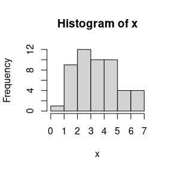

Introduction
To demonstrate the R package algebraic.mle, we consider the relatively simple case of a random sample from i.i.d. normally distributed random variables. First, we load the R package algebraic.mle with:
library(algebraic.mle)
# make it so that i only show 3 digits after the decimal point
options(digits=3)Generating a sample
We define the parameters of the i.i.d. random sample with:
n <- 200
theta <- c(10,2)We generate a random sample \(X_i \sim \operatorname{N}(\mu=10,\sigma^2=2)\) for \(i=1,\ldots,n\) with:
We have observed a sample of size \(n=200\). We show some observations from this sample (data frame) with:
head(x,n=4)
#> [1] 13.89 11.86 11.10 9.46We show a histogram of the sample with:
hist(x)
We see the characteristic bell shaped curve of the normal distribution. If we did not a prior know that the data was normally distributed, this would be evidence that the normal distribution is a good fit to the data.
Maximum likelihood estimation
If we would like to estimate \(\theta=(10, 2)'\), we can do so using maximum likelihood estimation as implemented by the algebraic.mle package:
theta.hat <- mle_normal_mu_var(x)
summary(theta.hat)
#> Maximum likelihood estimator of type mle_normal_mu_var is normally distributed.
#> The estimates of the parameters are given by:
#> mu var
#> 10.05 2.42
#> The fisher information matrix (FIM) is given by:
#> [,1] [,2]
#> [1,] 82.6 0
#> [2,] 0.0 17
#> The variance-covariance matrix of the estimator is given by:
#> [,1] [,2]
#> [1,] 0.0121 0.0000
#> [2,] 0.0000 0.0587
#> The asymptotic 95% confidence interval of the parameters are given by:
#> 2.5% 97.5%
#> mu 9.87 10.23
#> var 2.02 2.82
#> The bias of the estimator is given by:
#> var
#> 0.0000 -0.0121
#> The MSE of the estimator is 0.071 .
#> The log-likelihood is -372 .
#> The AIC is 749 .
#> The standard error is 0.11 0.242 .We can show the point estimate given data x with:
point(theta.hat)
#> mu var
#> 10.05 2.42We can show the Fisher information matrix (FIM) and variance-covariance matrix with:
fim(theta.hat)
#> [,1] [,2]
#> [1,] 82.6 0
#> [2,] 0.0 17
vcov(theta.hat)
#> [,1] [,2]
#> [1,] 0.0121 0.0000
#> [2,] 0.0000 0.0587We can show the confidence intervals with:
confint(theta.hat)
#> 2.5% 97.5%
#> mu 9.87 10.23
#> var 2.02 2.82Performance measures of the MLE
Let \(F\) denote the true distribution function such that \(X_j \sim F\) for all \(j\). Suppose we have some population parameter \(\theta = t(F)\) and an estimator of \(\theta\) given by \(\hat\theta = s(\{X_1,\ldots,X_n\})\). A reasonable requirement for an estimator \(\hat\theta\) is that it converges to the true parameter value \(\theta\) as we collect more and more data. In particular, we say that it is a consistent estimator of \(\theta\) if \(\hat\theta\) converges in probability to \(\theta\), denoted by \(\hat\theta \overset{p}{\mapsto} \theta\).
If the regularity conditions hold for the MLE, then \(\hat\theta\) is a consistent estimator of \(\theta\). However, for finite sample sizes, the estimator may be biased. The bias of \(\hat\theta\) with respect to \(\theta\) is defined as \[ \operatorname{bias}(\hat\theta,\theta) = E(\hat\theta) - \theta, \] where \(\operatorname{bias}(\hat\theta,\theta) = 0\) indicates that \(\hat\theta\) is an unbiased estimator of \(\theta\).
As a function of the true distribution \(F\), the bias is unknown and is not a statistic. However, in the case of the normal, \(\hat\mu\) is unbiased and, analytically, the bias of \(\hat\sigma^2\) is given by \(-\frac{1}{n} \sigma^2\):
bias(theta.hat,theta)
#> [1] 0.00 -0.01If \(\sigma^2\) is not known, we may estimate it by using replacing \(\hat\sigma^2\) instead:
bias(theta.hat)
#> var
#> 0.0000 -0.0121The mean squared error (MSE) is another performance measure of an estimator. It is given by \[ \operatorname{mse}(\hat\theta) = E\bigl\{(\hat\theta - \theta)^T(\hat\theta - \theta)\bigr\}, \] Another way to compute the MSE is given by \[ \operatorname{mse}(\hat\theta) = \operatorname{trace}(\operatorname{cov}(\hat\theta) + \operatorname{bias}(\hat\lambda,\lambda)^T \operatorname{bias}(\hat\lambda,\lambda). \] We may, of course, have to estimate the MSE if the \(\theta\) is not known by replacing the bias with an estimate of the bias, as discussed previously.
Here’s R code to compute the MSE of \(\hat\theta\):
Sampling distribution of the MLE
A nice property of MLEs is that, asymptotically, they converge to a normal distribution with a mean given by the true parameter, in this case \(\theta = (\mu,\sigma^2)'\), and a variance-covariance given by the inverse of the Fisher information matrix evaluated at \(\theta\).
We do not know \(\theta\), but we may estimate it from a sample, and thus we may approximate the sampling distribution of \(\hat\theta\) with \(\mathcal{N}(\hat\theta,I^{-1}(\hat\theta))\).
Invariance property of the MLE
An interesting property of an MLE \(\hat\theta\) is that the MLE of \(f(\theta)\) is given by \(f(\hat\theta)\).
The method rmap applied to an object x for which is_mle(x) and a function f compatible with point(x) (and optionally a simulation sample size) computes the MLE of f(x).
Example
We know that the MLE \(\hat\theta \sim \mathcal{N}(\theta,I^{-1}(\theta))\). We seek a transformation \(g(\hat\theta)\) such that its expectation is \(2 \theta\), i.e., \(g(\theta) = 2\theta\):
f <- function(theta) 2*thetaWe compute the MLE of \(2 \hat\theta\) (using a simulation size \(n=1000\)) with:
Weighted MLE: a weighted sum of maximum likelihood estimators
Since the variance-covariance of an MLE is inversely proportional to the Fisher information that the MLE is defined with respect to, we can combine multiple MLEs of \(\theta\), each of which may be defined with respect to a different kind of sample, to arrive at the MLE that incorporates the Fisher information in all of those samples.
Consider \(k\) mutually independent MLEs of parameter \(\theta\), \(\hat\theta_1,\ldots,\hat\theta_k\), where \(\hat\theta_j \sim N(\theta,I_j^{-1}(\theta))\). Then, the sampling MLE of \(\theta\) that incorporates all of the data in \(\hat\theta_1,\ldots,\hat\theta_k\) is given by the inverse-variance weighted mean, \[ \hat\theta_w = \left(\sum_{j=1}^k I_j(\theta)\right)^{-1} \left(\sum_{j=1}^k I_j(\theta) \hat\theta_j\right), \] which, asymptotically, has an expected value of \(\theta\) and a variance-covariance of \(\left(\sum_{j=1}^k I_j(\theta)\right)^{-1}\).
Example
To evaluate the performance of the weighted MLE, we generate a sample of \(N=1000\) observations from \(\mathcal{N}(\theta)\) and compute the MLE for the observed sample, denoted by \(\hat\theta\).
We then divide the observed sample into \(r=5\) sub-samples, each of size \(N/r=100\), and compute the MLE for each sub-sampled, denoted by \(\theta^{(1)},\ldots,\theta^{(r)}\).
Finally, we do a weighted combination these MLEs to form the weighted MLE, denoted by \(\theta_w\):
N <- 1000
r <- 5
samp <- rnorm(N,mean=theta[1],sd=sqrt(theta[2]))
samp.sub <- matrix(samp,nrow=r)
mles.sub <- list(length=r)
for (i in 1:r)
mles.sub[[i]] <- mle_normal_mu_var(samp.sub[i,])
mle.wt <- mle_weighted(mles.sub)
mle <- mle_normal_mu_var(samp)We show the results in the following R code. First, we show the weighted MLE and its MSE:
The MLE for the total sample and its MSE is:
We see that \(\hat\theta\) and \(\hat\theta_w\) model approximately the same sampling distribution when estimating \(\theta\) given i.i.d. samples.
Bootstrapping the MLEs
Let’s compare the earlier results that relied on the large sampling assumption with the bootstrapped MLE using mle_boot. First, mle_boot needs an MLE solver for the normal distribution. We have one with mle_normal_mu_var: we just need to wrap it in a function that takes the data as input and returns the MLE of the parameters and then pass it to mle_boot constructor:
mle_solver <- function(data, ind)
point(mle_normal_mu_var(data[ind]))
R <- 1000 # number of bootstrap replicates
# recall the data is `x`
(theta.boot <- mle_boot(mle_solver, x, R))
#> Maximum likelihood estimator of type mle_boot is normally distributed.
#> The estimates of the parameters are given by:
#> mu var
#> 10.05 2.42
#> The fisher information matrix (FIM) is given by:
#> [,1] [,2]
#> [1,] 75.991 0.975
#> [2,] 0.975 22.651
#> The variance-covariance matrix of the estimator is given by:
#> [,1] [,2]
#> [1,] 0.013167 -0.000567
#> [2,] -0.000567 0.044172
#> The asymptotic 95% confidence interval of the parameters are given by:
#> 2.5% 97.5%
#> mu 9.86 10.24
#> var 2.08 2.77
#> The bias of the estimator is given by:
#> mu var
#> -0.000595 -0.012772
#> The MSE of the estimator is 0.0574 .
#> The log-likelihood is .
#> The AIC is .
#> The standard error is 0.115 0.21 .We already printed out the theta.boot object, which provided a lot of information about it, but we can obtain specified statistics from the Bootstrap MLE using the standard interface in algorithmic.mle, e.g.:
(point(theta.boot)) # point estimate
#> mu var
#> 10.05 2.42
(vcov(theta.boot)) # variance-covariance matrix
#> [,1] [,2]
#> [1,] 0.013167 -0.000567
#> [2,] -0.000567 0.044172
(se(theta.boot)) # standard error
#> [1] 0.115 0.210
(bias(theta.boot)) # bias
#> mu var
#> -0.000595 -0.012772
(mse(theta.boot)) # mean squared error
#> [1] 0.0574We see that, for the most part, the results are similar to those obtained using the large sampling assumption.
There are many additional arguments you can pass to the mle_boot function. For instance, parallel computing may be used to speed up the bootstrap process. For this, you need to load the parallel package and set the parallel arguments for the mle_boot function. For example, to use 4 cores, you would do the following (note that we do not evaluate this code in the vignette to reduce the number of dependencies):
Conclusion
In this vignette, we demonstrated how to use the algebraic.mle package to estimate the sampling distribution of the MLE using the large sampling assumption and the Bootstrap method. The package provides various functions for obtaining statistics of the MLE, allowing for a deeper understanding of the properties of your estimator.